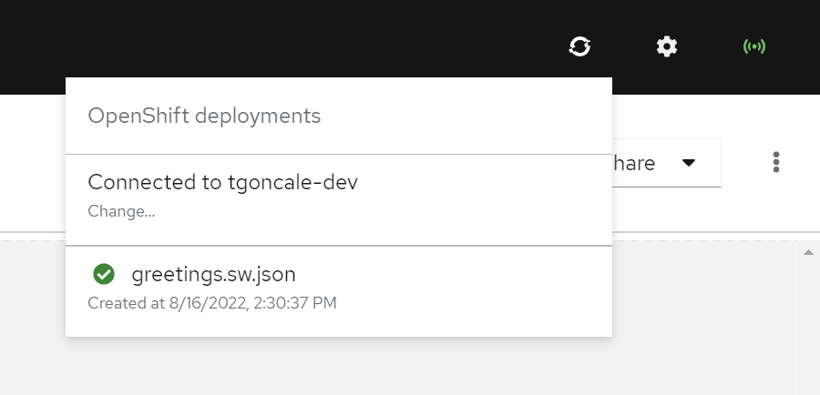

Deploying your Kogito Serverless Workflow projects using Serverless Logic Web Tools
You can deploy your Kogito Serverless Workflow projects to an OpenShift instance using the OpenShift integration. The OpenShift integration allows you test your implementations in a live environment.
|
The deployments described in this document are for development purposes, but not for production. |
Deploying your first Kogito Serverless Workflow project
You can deploy your first Kogito Serverless Workflow project to an OpenShift instance and run the project in a live environment.
-
OpenShift integration is configured correctly.
For more information, see Integrating your Kogito Serverless Workflow project with OpenShift using Serverless Logic Web Tools.
-
Create a project using an example application in GitHub.
You can use the
serverless-workflow-greeting-quarkusexample application, which does not contain external dependencies, and is easy to test and comprehend.The
serverless-workflow-greeting-quarkusexample application contains a single operation state with one action, sending request to thegreetingfunction. In the example application, the workflow data is assumed to be the name of the person to greet, and the result is the greeting for the person. The result is added to the state data, which later becomes the workflow data output. -
On the editor page, click Try on OpenShift button.
-
On the context menu, click Deploy "greetings" (Kogito Serverless Workflow).
A modal appears, displaying the following deployment options:
-
Deploy as a project: This option is available if your current workspace contains the entire project structure including a single
pom.xmlfile.-
If Deploy as a project option is disabled, a pre-built image container, containing a Quarkus project is used and the workflow files are placed in the
src/main/resourcesfolder of the project. In this case, ensure that the workflow files do not have other dependencies as the dependencies are not included in the deployment. -
If Deploy as a project option is enabled, all the workflow files are deployed as-is, indicating that no project template is used. Therefore, ensure that the project is deployable.
-
-
Upload OpenAPI spec to Service Registry: After a workflow is deployed, an OpenAPI specification is available in the deployed service. When you check this option, the Serverless Logic Web Tools fetches the OpenAPI specification, and when ready, the OpenAPI specification is uploaded to your configured service registry. To use this option, you need to configure your service account and service registry on the Settings page. To configure the service account and service registry, see Integrating with Red Hat OpenShift Application and Data Services.
-
Attach KafkaSource to the deployment: You must check this option if your workflow contains an Apache Kafka event dependency. To use this option, you need to configure your service account and streams for Apache Kafka on the Settings page. To configure your service account and Apache Kafka streams, see Integrating with Red Hat OpenShift Application and Data Services.
-
-
Uncheck all options and click Confirm.
A pop-up appears displaying Your deployment has been successfully started and will be available shortly. Please do not close this browser tab until the operation is completed. message. Clicking on the OpenShift deployments icon shows your deployment status. The deployment process takes a few minutes since a build needs to be completed before the services are active.
OpenShift deployment status
Verifying the deployment status of your first project
After the deployment of your Kogito Serverless Workflow project is successful, you can verify various information about the deployed service.
-
OpenShift integration is configured correctly.
For more information, see Integrating your Kogito Serverless Workflow project with OpenShift using Serverless Logic Web Tools.
-
Your Kogito Serverless Workflow project is deployed successfully.
-
Deployed project must be deployed using the Deploy as a project option as unchecked, as the deployment page is only available using the pre-built image container. If the option Deploy as a project option is checked the tool opens the
index.htmlfile your project provides, if any.
-
Click on the OpenShift deployments icon to view a list of deployments.
-
If your deployment is successful (listed with
 ), you can click on it and access the deployment page to check the Swagger UI, Open API specification, and Metrics page using DashBuilder.Serverless deployment page
), you can click on it and access the deployment page to check the Swagger UI, Open API specification, and Metrics page using DashBuilder.Serverless deployment page
Found an issue?
If you find an issue or any misleading information, please feel free to report it here. We really appreciate it!